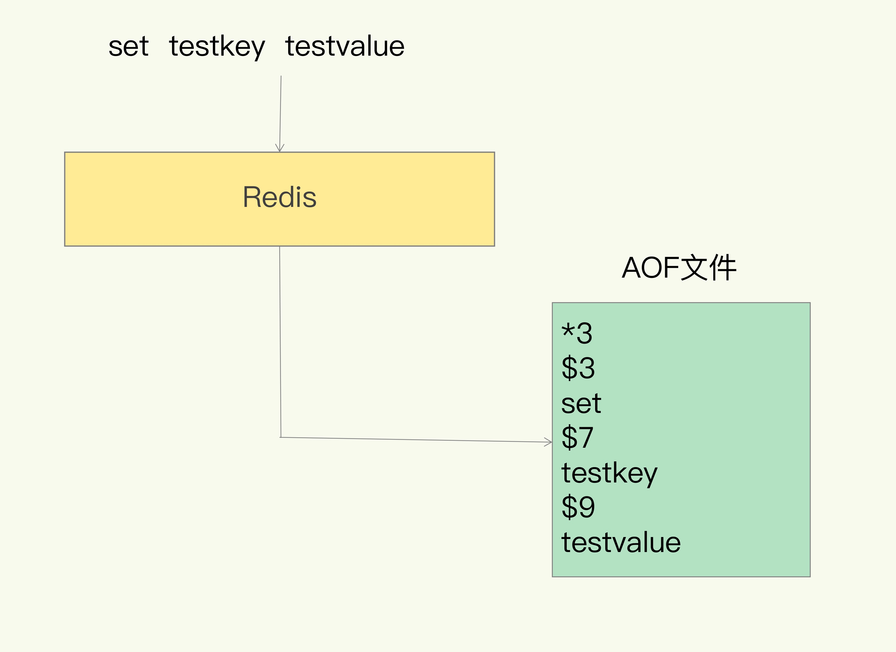

Redis持久化有两种方式，一种是RDB快照，另一种是AOF日志。
RDB快照和AOF
RDB fork(多进程)
Redis使用操作系统的多进程COW（copy on write）机制来实现快照持久化。
Redis 在持久化时会调用 glibc 的函数fork产生一个子进程，快照持久化完全交给子进程来处理，父进程继续处理客户端请求不会进行IO操作，进而保证高性能。
fork 是 Linux 操作系统的机制，为了节约内存资源，所以尽可能让它们共享起来。在进程分离的一瞬间，内存的增长几乎没有明显变化。
用 Python 语言描述进程分离的逻辑如下。fork函数会在父子进程同时返回，在父进程里返回子进程的 pid，在子进程里返回零。如果操作系统内存资源不足，pid 就会是负数，表示fork失败。
pid = os.fork()
if pid > 0:
handle_client_requests() # 父进程继续处理客户端请求
if pid == 0:
handle_snapshot_write() # 子进程处理快照写磁盘
if pid < 0:
# fork error
内存页结构
fork()之后，kernel把父进程中所有的内存页的权限都设为read-only，然后子进程的地址空间指向父进程。子进程在做数据持久化，只对数据进行遍历读取，序列化写入磁盘中。
父进程需要修改时，CPU硬件检测到内存页是read-only的，于是触发页异常中断（page-fault），陷入kernel的一个中断例程。中断例程中，kernel就会把触发的异常的页复制一份，于是父子进程各自持有独立的一份。这时子进程相应的页面是没有变化的，还是进程产生时那一瞬间的数据。
每个内存页大小只有4KB，随着父进程修改操作的持续进行，越来越多的共享页面被分离出来。内存就会持续增长，但也不会超过原有数据内存的2倍。
AOF日志
说到日志，我们比较熟悉的是数据库的写前日志（Write Ahead Log, WAL），就是先把修改的数据记到日志文件中，再进行数据操作，以便故障时进行恢复。不过，AOF 日志正好相反，它是写后日志，即 Redis 是先执行命令，把数据写入内存，然后才记录日志，如下图所示：
AOF 里记录的是 Redis 收到的每一条命令，是 Redis 服务器的顺序指令序列，这些命令是以文本形式保存的。AOF 日志只记录对内存进行修改的指令记录。

Redis 会在收到客户端修改指令后，进行参数校验进行逻辑处理后，如果没问题，就立即将该指令文本存储到 AOF 日志中，也就是先执行指令才将日志存盘。
写后日志这种方式，就是先让系统执行命令，只有命令能执行成功，才会被记录到日志中。为了避免额外的检查开销，Redis 在向 AOF 里面记录日志的时候，并不会先去对这些命令进行语法检查。使用写后日志这一方式的一大好处是，可以避免出现记录错误命令的情况。还有一个好处是在命令执行后才记录日志，所以不会阻塞当前的写操作。
AOF 也有两个潜在的风险
- 首先，如果刚执行完一个命令，还没有来得及记日志就宕机了，那么这个命令和相应的数据就有丢失的风险。
- 其次，AOF 虽然避免了对当前命令的阻塞，但可能会给下一个操作带来阻塞风险。
fsync 三种写回策略
AOF 日志是以文件的形式存在的，当程序对 AOF 日志文件进行写操作时，实际上是将内容写到了内核为文件描述符分配的一个内存缓存中，然后内核会异步将脏数据刷回到磁盘的。
这就意味着如果机器突然宕机，AOF 日志内容可能还没有来得及完全刷到磁盘中。
Linux 的glibc提供了fsync(int fd)函数可以将指定文件的内容强制从内核缓存刷到磁盘。只要 Redis 进程实时调用 fsync 函数就可以保证 aof 日志不丢失。
AOF 机制给我们提供了三个选择，也就是 AOF 配置项 appendfsync 的三个可选值。
- Always，同步写回：每个写命令执行完，立马同步地将日志写回磁盘；
- Everysec，每秒写回：每个写命令执行完，只是先把日志写到 AOF 文件的内存缓冲区，每隔一秒把缓冲区中的内容写入磁盘；
- No，操作系统控制的写回：每个写命令执行完，只是先把日志写到 AOF 文件的内存缓冲区，由操作系统决定何时将缓冲区内容写回磁盘。
我们就可以根据系统对高性能和高可靠性的要求，来选择使用哪种写回策略了。总结一下就是：想要获得高性能，就选择 No 策略；如果想要得到高可靠性保证，就选择 Always 策略；如果允许数据有一点丢失，又希望性能别受太大影响的话，那么就选择 Everysec 策略。
但是，按照系统的性能需求选定了写回策略，并不是“高枕无忧”了。毕竟，AOF 是以文件的形式在记录接收到的所有写命令。随着接收的写命令越来越多，AOF 文件会越来越大。这也就意味着，我们一定要小心 AOF 文件过大带来的性能问题。
这里的“性能问题”，主要在于以下三个方面：
- 一是，文件系统本身对文件大小有限制，无法保存过大的文件；
- 二是，如果文件太大，之后再往里面追加命令记录的话，效率也会变低；
- 三是，如果发生宕机，AOF 中记录的命令要一个个被重新执行，用于故障恢复，如果日志文件太大，整个恢复过程就会非常缓慢，这就会影响到 Redis 的正常使用。
所以在生产环境的服务器中，Redis 通常是每隔 1s 左右执行一次 fsync 操作，周期 1s 是可以配置的。这是在数据安全性和性能之间做了一个折中，在保持高性能的同时，尽可能使得数据少丢失。
Redis 另外两种策略，一个是永不 fsync——让操作系统来决定何时同步磁盘，很不安全，另一个是来一个指令就 fsync 一次——非常慢。但是在生产环境基本不会使用，了解一下即可。
AOF 重写
Redis 在长期运行的过程中，AOF 的日志会越变越长。如果实例宕机重启，重放整个 AOF 日志会非常耗时，导致长时间 Redis 无法对外提供服务。所以需要对 AOF 日志瘦身。
和 AOF 日志由主线程写回不同，Redis 提供了 bgrewriteaof 指令用于对 AOF 日志进行瘦身。其原理就是开辟一个子进程对内存进行遍历转换成一系列 Redis 的操作指令，序列化到一个新的 AOF 日志文件中。序列化完毕后再将操作期间发生的增量 AOF 日志追加到这个新的 AOF 日志文件中，追加完毕后就立即替代旧的 AOF 日志文件了，瘦身工作就完成了，重写过程由后台线程 bgrewriteaof 来完成，这也是为了避免阻塞主线程，导致数据库性能下降。
我把重写的过程总结为“一个拷贝，两处日志”。
“一个拷贝”就是指，每次执行重写时，主线程 fork 出后台的 bgrewriteaof 子进程。此时，fork 会把主线程的内存拷贝一份给 bgrewriteaof 子进程，这里面就包含了数据库的最新数据。然后，bgrewriteaof 子进程就可以在不影响主线程的情况下，逐一把拷贝的数据写成操作，记入重写日志。
“两处日志”又是什么呢？
因为主线程未阻塞，仍然可以处理新来的操作。此时，如果有写操作，第一处日志就是指正在使用的 AOF 日志，Redis 会把这个操作写到它的缓冲区。这样一来，即使宕机了，这个 AOF 日志的操作仍然是齐全的，可以用于恢复。
而第二处日志，就是指新的 AOF 重写日志。这个操作也会被写到重写日志的缓冲区。这样，重写日志也不会丢失最新的操作。等到拷贝数据的所有操作记录重写完成后，重写日志记录的这些最新操作也会写入新的 AOF 文件，以保证数据库最新状态的记录。此时，我们就可以用新的 AOF 文件替代旧文件了。
每次 AOF 重写时，Redis 会先执行一个内存拷贝，用于重写；然后，使用两个日志保证在重写过程中，新写入的数据不会丢失。而且，因为 Redis 采用额外的线程进行数据重写，所以，这个过程并不会阻塞主线程。
运维
快照是通过开启子进程的方式进行的，它是一个比较耗资源的操作。
- 遍历整个内存，大块写磁盘会加重系统负载
- AOF 的 fsync 是一个耗时的 IO 操作，它会降低 Redis 性能，同时也会增加系统 IO 负担
所以通常 Redis 的主节点是不会进行持久化操作，持久化操作主要在从节点进行。从节点是备份节点，没有来自客户端请求的压力，它的操作系统资源往往比较充沛。
但是如果出现网络分区，从节点长期连不上主节点，就会出现数据不一致的问题，特别是在网络分区出现的情况下又不小心主节点宕机了，那么数据就会丢失，所以在生产环境要做好实时监控工作，保证网络畅通或者能快速修复。另外还应该再增加一个从节点以降低网络分区的概率，只要有一个从节点数据同步正常，数据也就不会轻易丢失。
Redis 4.0 混合持久化
Redis 4.0可以将 rdb 文件的内容和增量的 AOF 日志文件存在一起。这里的 AOF 日志不再是全量的日志，而是自持久化开始到持久化结束的这段时间发生的增量 AOF 日志，通常这部分 AOF 日志很小。
于是在 Redis 重启的时候，可以先加载 rdb 的内容，然后再重放增量 AOF 日志就可以完全替代之前的 AOF 全量文件重放，重启效率因此大幅得到提升。
本文由 Sajor
创作，采用 知识共享署名4.0 国际许可协议进行许可
本站文章除注明转载/出处外，均为本站原创或翻译，转载前请务必署名
最后编辑时间为: 2022-03-10T10:05:23+08:00